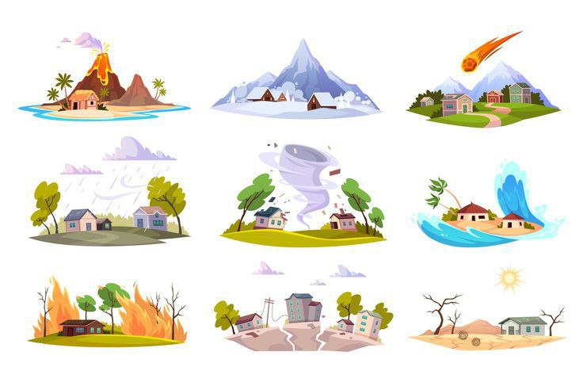
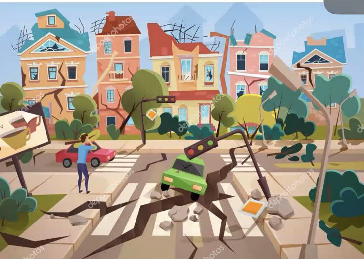

Ongoing Hazards
Understand the impacts & how to prepare
Impacts

Aftershocks and Secondary Disasters
Additional earthquakes, landslides, or tsunamis can follow the main event.
Health Risks
Spread of waterborne diseases,lack of clean drinking water, and limited medical care worsen the crisis.

Infrastructure Instability
Damaged buildings, roads, and power lines remain unsafe and may collapse at any time.
How to Prepare
Continuous Monitoring
Use early warning systems and scientific monitoring for aftershocks, flooding, and landslides.
Strict Safety Zones
Restrict access to unstable buildings and risky areas to prevent further casualties.
Health and Relief Measures
Provide medical aid, sanitation facilities, and safe drinking water continuously.